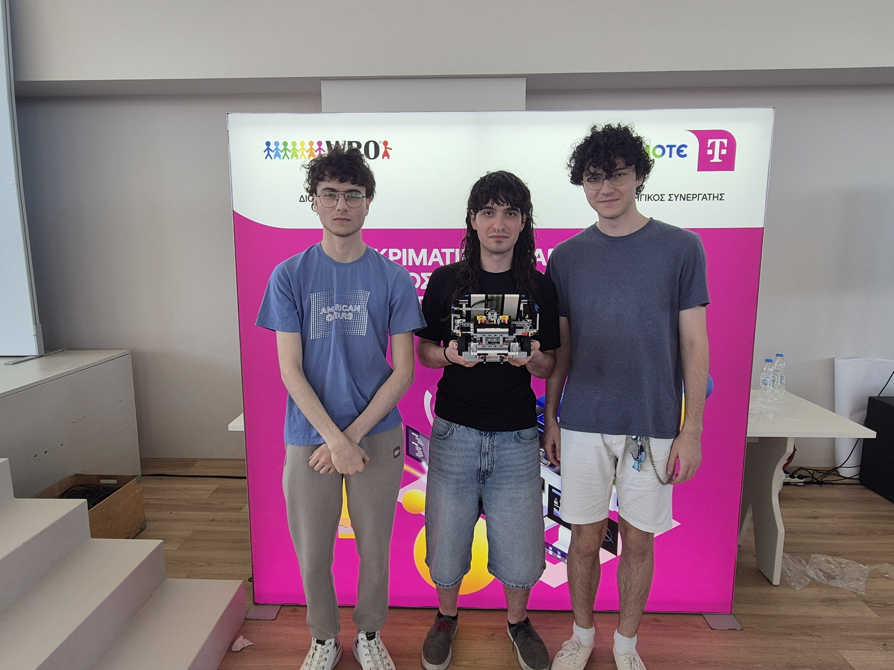
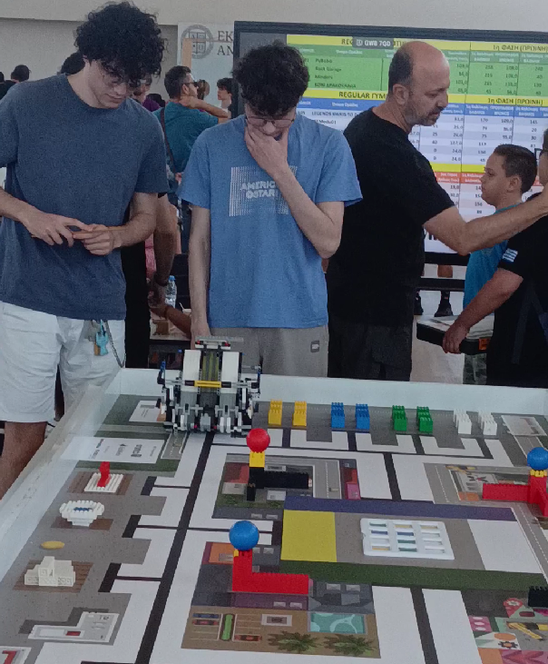
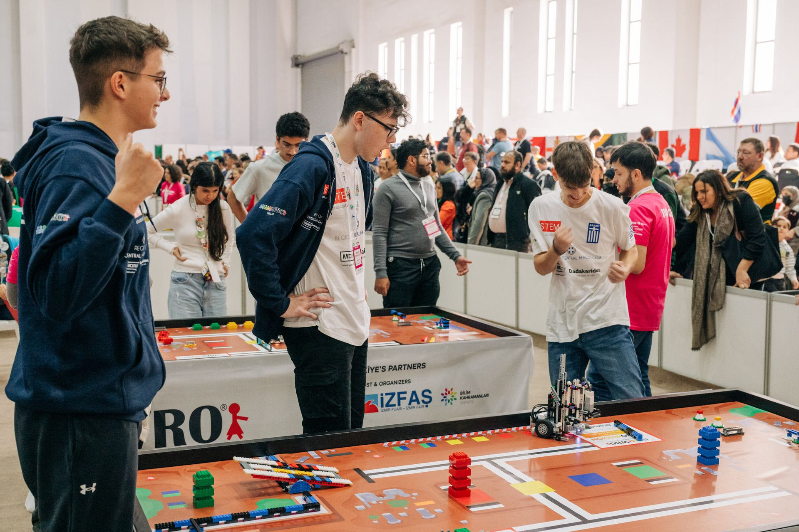
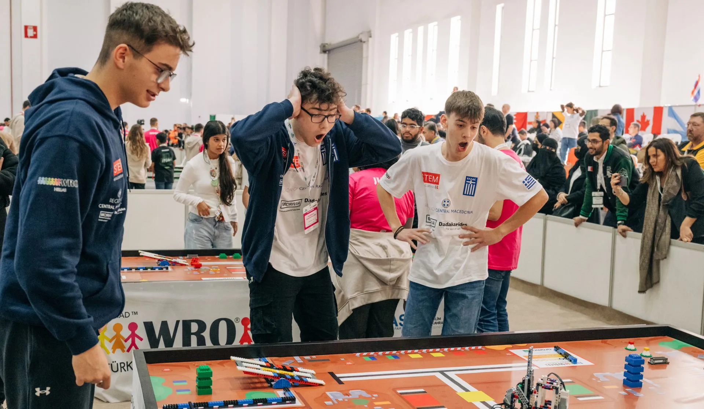
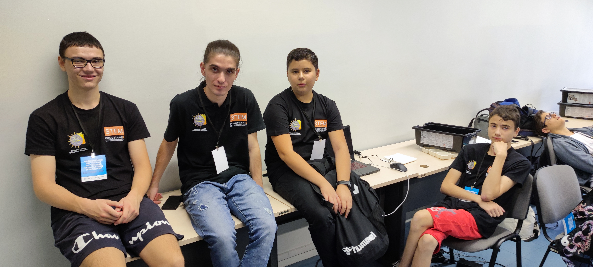
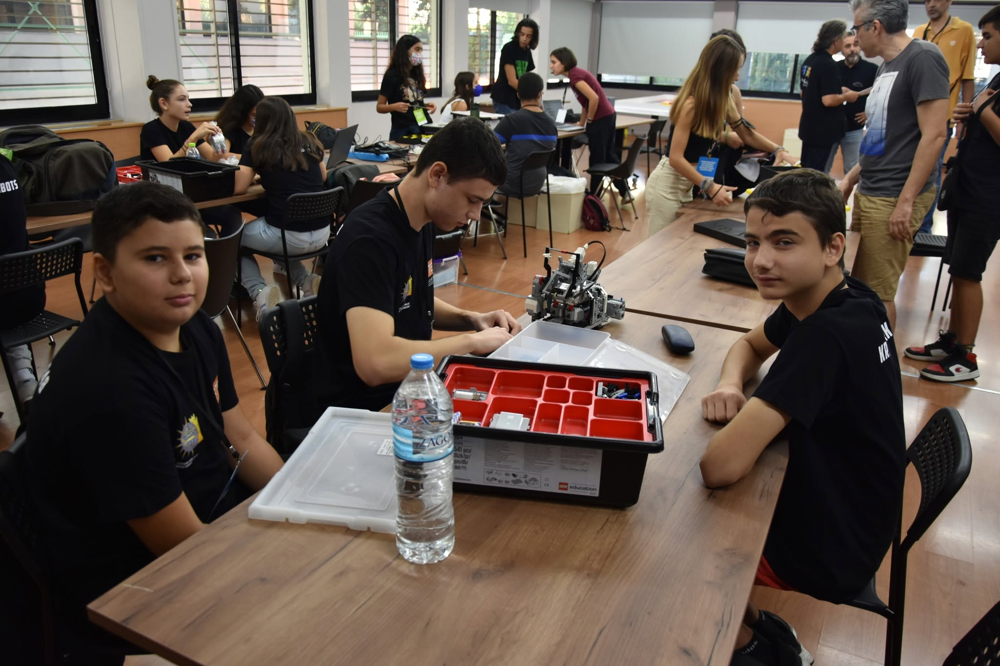

Ιστορικό & Συμμετοχές
Η διαδρομή, οι προκλήσεις και οι εθνικές & παγκόσμιες διακρίσεις της ομάδας μας από το 2022 έως σήμερα.
Εθνικός Τελικός WRO 2026
Πρόκριση στον Παγκόσμιο Τελικό WRO 2026 στο Πουέρτο Ρίκο!


Προπονητής: Φοίβος-Παναγιώτης Φιλιππίδης
Μαθητές: Γεώργιος Τριανταφυλλίδης, Αθανάσιος Τριανταφυλλίδης, Χρήστος Κατσιαμάνης
Ο τελικός φιλοξενήθηκε στις εγκαταστάσεις της Εκπαιδευτικής Αναγέννησης και αποτέλεσε ίσως τη μεγαλύτερη δοκιμασία αντοχής για την ομάδα μας. Έχοντας στη διάθεσή μας μόλις 2 μήνες μετά τον Πανελλήνιο Διαγωνισμό STEM, κληθήκαμε να προετοιμαστούμε για μια εντελώς νέα πίστα. Η πίεση ήταν ασφυκτική: ο προπονητής και δύο μέλη βρίσκονταν στη δίνη της θερινής πανεπιστημιακής εξεταστικής, ενώ το τέταρτο μέλος έδινε Πανελλήνιες εξετάσεις!
Παρά την κούραση και τον ελάχιστο ελεύθερο χρόνο, η στρατηγική μας απέδωσε στο έπακρο. Το αποκορύφωμα ήρθε στο απρόβλεπτο Afternoon Challenge, όπου διαπρέψαμε: το ρομπότ μας συγκέντρωσε 140 πόντους σε μόλις 68 δευτερόλεπτα, τη στιγμή που η δεύτερη καλύτερη επίδοση ήταν στους 55 πόντους! Αυτή η επιβλητική διαφορά σφράγισε την πρωτιά και μας έδωσε το χρυσό εισιτήριο για το Πουέρτο Ρίκο.
🔗 Διαβάστε το άρθρο της διοργάνωσης
Πανελλήνιος Διαγωνισμός STEM 2026
Προπονητής: Φοίβος-Παναγιώτης Φιλιππίδης
Μαθητές: Γεώργιος Τριανταφυλλίδης, Αθανάσιος Τριανταφυλλίδης, Χρήστος Κατσιαμάνης
Στον Πανελλήνιο Διαγωνισμό STEM 2026, η ομάδα μας ακολούθησε μια εντελώς διαφορετική στρατηγική σε σχέση με τον ανταγωνισμό. Αντί για μια βαριά κατασκευή, σχεδιάσαμε ένα εξαιρετικά λεπτό και ελαφρύ ρομπότ. Ο στόχος μας ήταν η ευελιξία: θέλαμε το ρομπότ να μπορεί να κινείται με μεγάλη ταχύτητα μέσα από τα "στενά περάσματα" της πίστας, αποφεύγοντας επιδέξια τα πολύπλοκα εμπόδια.
Αυτή η καινοτόμα προσέγγιση απέδωσε! Η απόδοση του ρομπότ στην κατηγορία Regular Προχωρημένων ήταν εξαιρετική, χαρίζοντάς μας τη 2η θέση πανελλαδικά. Μείναμε απόλυτα ικανοποιημένοι με το αποτέλεσμα, το οποίο αποτέλεσε και την τέλεια "προθέρμανση" για τον θρίαμβό μας στον Εθνικό Τελικό της WRO λίγους μήνες μετά!
🔗 Διαβάστε το άρθρο στο NewsIT
Παγκόσμιος Τελικός WRO 2024 (Σμύρνη)


Προπονητής: Φοίβος-Παναγιώτης Φιλιππίδης
Μαθητές: Ανδρέας Μανωλόπουλος, Σπύρος Μπάμπας, Γεώργιος Τριανταφυλλίδης
Το ταξίδι μας στον Παγκόσμιο Τελικό της Σμύρνης αποτέλεσε την πρώτη μας διεθνή συμμετοχή. Το θέμα της χρονιάς («Earth Allies») απαιτούσε ρομποτικές λύσεις για την ανοικοδόμηση πόλεων μετά από φυσικές καταστροφές, καλώντας μας να διαχειριστούμε μια αντικειμενικά πολύπλοκη και απαιτητική πίστα.
Στον τελικό βρεθήκαμε αντιμέτωποι με 103 αντίπαλες ομάδες από κάθε γωνιά του πλανήτη. Γνωρίζαμε καλά ότι πολλές από αυτές αποτελούσαν παραδοσιακές δυνάμεις της εκπαιδευτικής ρομποτικής, με συνεχόμενες παρουσίες και εδραιωμένη δυναμική σε παγκόσμιους τελικούς στο παρελθόν. Αντί, όμως, να υποχωρήσουμε μπροστά στα φαβορί, η πρόκληση μας πείσμωσε. Καλύψαμε τη διαφορά εμπειρίας με αυστηρή προσήλωση και μεθοδικότητα, κοιτώντας τις κορυφαίες ομάδες στα μάτια. Το αποτέλεσμα μας δικαίωσε απόλυτα, κατακτώντας την 4η θέση στην Ευρώπη και την 25η παγκοσμίως, επιβεβαιώνοντας πως ο σωστός στρατηγικός σχεδιασμός μπορεί να ανατρέψει κάθε προγνωστικό.
Εθνικός Τελικός WRO 2024
Προπονητής: Φοίβος-Παναγιώτης Φιλιππίδης
Μαθητές: Ανδρέας Μανωλόπουλος, Σπύρος Μπάμπας, Γεώργιος Τριανταφυλλίδης
Μετά τη μεγάλη πρωτιά στον Πανελλήνιο Διαγωνισμό STEM 2024, είχαμε στη διάθεσή μας μόλις 3 μήνες για να προετοιμαστούμε για τη νέα, εξαιρετικά απαιτητική πίστα της RoboMission Senior. Ο χρόνος πίεζε ασφυκτικά και δεν υπήρχε κανένα περιθώριο για λάθη στη στρατηγική.
Το σημείο-κλειδί για την επιτυχία μας ήταν η προσθήκη του Γιώργου στην ομάδα, ο οποίος μεταγράφηκε στους EarPhones και έπαιξε καθοριστικό ρόλο στον μηχανολογικό σχεδιασμό του ρομπότ. Περάσαμε το μεγαλύτερο διάστημα της προετοιμασίας σχεδιάζοντας και "γκρεμίζοντας" το ρομπότ από την αρχή ξανά και ξανά, κυνηγώντας την τέλεια κατασκευή. Αυτή η επιμονή, σε συνδυασμό με την ανανεωμένη δυναμική της ομάδας, απέδωσε τα μέγιστα: κατακτήσαμε την 1η θέση στον Εθνικό Τελικό και σφραγίσαμε το εισιτήριο για τη Σμύρνη!
16ο Μαθητικό Συνέδριο Πληροφορικής
Μέντορας: Φοίβος-Παναγιώτης Φιλιππίδης
Μαθητές: Γεώργιος Τριανταφυλλίδης, Αθανάσιος Τριανταφυλλίδης
Ξεφεύγοντας προσωρινά από τον αμιγώς διαγωνιστικό τομέα της ρομποτικής, ο Γιώργος και ο Θάνος συμμετείχαν στο 16ο Μαθητικό Συνέδριο Πληροφορικής παρουσιάζοντας το καινοτόμο project «ChatGPT και Ανθρώπινες Εκφράσεις». Το πιο εντυπωσιακό της υπόθεσης είναι ότι η έρευνα και η ανάπτυξη αυτού του πρωτότυπου έργου έτρεχε παράλληλα με την εξαντλητική προετοιμασία της ομάδας για τον Πανελλήνιο Διαγωνισμό STEM και τον Εθνικό Τελικό της WRO!
Η προσπάθεια των παιδιών τράβηξε τα βλέμματα και το ενδιαφέρον του Τύπου. Πέρα από τα σχετικά άρθρα, η ομάδα παραχώρησε συνέντευξη στο τηλεοπτικό δίκτυο TV100, έχοντας την ευκαιρία να παρουσιάσει την ιδέα της στο ευρύ κοινό της Θεσσαλονίκης. Μια εξαιρετική απόδειξη ότι οι δυνατότητες των μελών μας δεν περιορίζονται στο hardware, αλλά επεκτείνονται δυναμικά και στην έρευνα γύρω από την Τεχνητή Νοημοσύνη.
Πανελλήνιος Διαγωνισμός STEM 2024
Προπονητής: Φοίβος-Παναγιώτης Φιλιππίδης
Μαθητές (Χήρες): Αθανάσιος Τριανταφυλλίδης, Γεώργιος Τριανταφυλλίδης
Μαθητές (EarPhones): Ανδρέας Μανωλόπουλος, Σπύρος Μπάμπας
Η συγκεκριμένη χρονιά στον Πανελλήνιο Διαγωνισμό STEM είχε μια τεράστια ιδιαιτερότητα, καθώς κατεβήκαμε με δύο ομάδες: τις «Χήρες» και τους «EarPhones».
Για τις «Χήρες», η πρόκληση ήταν μεγάλη. Ο Γιώργος, όντας πλέον μαθητής της Β' Λυκείου, έπρεπε να δώσει απόλυτη προτεραιότητα στην προετοιμασία για τις Πανελλήνιες εξετάσεις. Ως εκ τούτου, το βάρος έπεσε σχεδόν εξ ολοκλήρου στους ώμους του Θάνου, με τον Γιώργο να παρέχει στοχευμένη υποστήριξη στον μηχανολογικό σχεδιασμό. Την ημέρα του τελικού, ο Θάνος διαγωνίστηκε εντελώς μόνος του απέναντι σε πλήρεις ομάδες, επιδεικνύοντας τρομερή ψυχραιμία και κατακτώντας επάξια την 4η θέση πανελλαδικά!
Την ίδια στιγμή, η έτερη ομάδα μας, οι «EarPhones», επιβεβαίωσε την εξαιρετική της φόρμα κατακτώντας την 1η θέση στην τελική κατάταξη της διοργάνωσης! Λίγο μετά από αυτή τη διπλή επιτυχία, έγινε και η εσωτερική "μεταγραφή" του Γιώργου στους EarPhones, όπου η εμπειρία του έπαιξε καθοριστικό ρόλο στην κατάκτηση της 1η θέσης και στον Εθνικό Τελικό WRO που ακολούθησε.
9ο Μαθητικό Φεστιβάλ Ρομποτικής (ΜΦΡ)
Επιστημονική Επιτροπή / Προπονητής: Φοίβος-Παναγιώτης Φιλιππίδης
Μαθητές: Γεώργιος Τριανταφυλλίδης, Αθανάσιος Τριανταφυλλίδης
Η συμμετοχή μας στο 9ο Μαθητικό Φεστιβάλ Ρομποτικής είχε διπλή σημασία για εμάς. Στο εκθεσιακό κομμάτι, ο Γιώργος και ο Θάνος παρουσίασαν για πρώτη φορά στο κοινό το καινοτόμο project «ChatGPT και Ανθρώπινες Εκφράσεις», το οποίο βρισκόταν ακόμα στο αρχικό του στάδιο. Αυτή η διοργάνωση αποτέλεσε το ιδανικό "πεδίο δοκιμών" για την ιδέα τους, συλλέγοντας τις πρώτες εντυπώσεις προτού εξελίξουν το λογισμικό για το Μαθητικό Συνέδριο Πληροφορικής.
Παράλληλα, η διοργάνωση αποτέλεσε ένα σημαντικό ορόσημο για τον προπονητή της ομάδας, Φοίβο. Δεν βρέθηκε εκεί μόνο με την ιδιότητα του μέντορα των παιδιών, αλλά κλήθηκε να συμμετάσχει επισήμως ως μέλος της Επιστημονικής Επιτροπής του Φεστιβάλ. Μια τιμητική θέση που αντανακλά την αφοσίωση και την τεχνογνωσία που χαρακτηρίζει τον πυρήνα της ομάδας μας.
Εθνικός Τελικός WRO 2023
Προπονητής: Φοίβος-Παναγιώτης Φιλιππίδης
Μαθητές: Γεώργιος Τριανταφυλλίδης, Αθανάσιος Τριανταφυλλίδης
Οι «Θανάσιμες Πεθέρες» αποτέλεσαν άλλη μια επιβεβαίωση πως η ομάδα μας αρέσκεται στο να επιλέγει... αντισυμβατικά ονόματα! Αυτή η συμμετοχή μας στον Εθνικό Τελικό WRO είχε κυρίως αναγνωριστικό χαρακτήρα. Ήμασταν ακόμα στη φάση που συγκεντρώναμε εμπειρία, προσπαθώντας να κατανοήσουμε τις υψηλές απαιτήσεις της διοργάνωσης. Δεν ήρθε κάποια διάκριση, αλλά τα μαθήματα που πήραμε εκείνη τη μέρα αποτέλεσαν τη βάση για τις μεγάλες επιτυχίες που θα ακολουθούσαν.
Πανελλήνιος Διαγωνισμός STEM 2023
Προπονητής: Φοίβος-Παναγιώτης Φιλιππίδης
Μαθητές: Γεώργιος Τριανταφυλλίδης, Αθανάσιος Τριανταφυλλίδης, Νικόλ Βασιλοπούλου
Μια πραγματικά αξέχαστη και απόλυτα "fun" χρονιά για την ομάδα μας! Τα δεδομένα στην κατηγορία Regular Προχωρημένων του Πανελλήνιου Διαγωνισμού STEM ήταν εντελώς διαφορετικά σε σχέση με το παρελθόν. Αντί για τη συνήθη μάχη με τον χρόνο, οι ομάδες "μονομαχούσαν" head-to-head απέναντι σε άλλα ρομπότ, σε μια ρομποτική διασκευή του παιχνιδιού της τρίλιζας. Αυτό το διαδραστικό format εκτόξευσε το ενδιαφέρον όλων των παιδιών.
Σε αυτό το πλαίσιο, ο Γιώργος βρήκε τον τέλειο χώρο για να πειραματιστεί. Ξεφεύγοντας από τις τετριμμένες λύσεις της κατηγορίας, παρουσίασε μια κατασκευή που έλυνε την πίστα με έναν ιδιαίτερα αποδοτικό, σύνθετο και αντισυμβατικό τρόπο. Η συγκεκριμένη σχεδιαστική προσέγγιση εντυπωσίασε δικαιολογημένα τους κριτές, με αποτέλεσμα η ομάδα να αποσπάσει το πολυπόθητο Βραβείο Κατασκευής, αποδεικνύοντας ότι το ρίσκο στην καινοτομία πάντα ανταμείβεται.
8ο Μαθητικό Φεστιβάλ Ρομποτικής (ΜΦΡ)
Προπονητής: Φοίβος-Παναγιώτης Φιλιππίδης
Μαθητές: Άντα Κατσάνου, Αθανάσιος Τριανταφυλλίδης
Η συμμετοχή μας στο 8ο Μαθητικό Φεστιβάλ Ρομποτικής ανέδειξε την ευαισθητοποίηση της ομάδας μας απέναντι σε σύγχρονα περιβαλλοντικά ζητήματα. Τα παιδιά δεν διαγωνίστηκαν με ένα αυτόνομο, απομονωμένο ρομπότ, αλλά ανέλαβαν να σχεδιάσουν και να παρουσιάσουν ένα κρίσιμο μέρος ενός μεγαλύτερου, συλλογικού project.
Το τμήμα που αναπτύξαμε επικεντρώθηκε στην έξυπνη άρδευση και τον αυστηρό έλεγχο της κατανάλωσης υδάτινων πόρων. Στόχος μας ήταν η δημιουργία ενός αυτοματισμού που θα εξοικονομούσε όσο το δυνατόν περισσότερο νερό κατά τη διαδικασία του ποτίσματος. Η λύση που παρουσίασαν τα παιδιά συνδύασε άψογα την τεχνολογία με την οικολογία, κερδίζοντας τις εντυπώσεις και χαρίζοντάς μας το 1ο Βραβείο Προσφοράς στο Περιβάλλον, μια διάκριση για την οποία είμαστε ιδιαίτερα περήφανοι.
Εθνικός Τελικός WRO 2022


Προπονητής: Φοίβος-Παναγιώτης Φιλιππίδης
Μαθητές: Γεώργιος Τριανταφυλλίδης, Αθανάσιος Τριανταφυλλίδης, Ραφαήλ Σκουλάκης
Η συμμετοχή μας στον Εθνικό Τελικό WRO του 2022 σηματοδότησε την πρώτη επίσημη επαφή των παιδιών με τον διαγωνιστικό κόσμο της εκπαιδευτικής ρομποτικής. Με μια εξαιρετικά σύντομη περίοδο προετοιμασίας, η ομάδα κλήθηκε να διαχειριστεί ένα εντελώς πρωτόγνωρο περιβάλλον, με άγνωστες απαιτήσεις και διαδικασίες.
Παρά το γεγονός ότι κάναμε τα πρώτα μας βήματα, η ομάδα στάθηκε στο ύψος των περιστάσεων, παρουσιάζοντας μια κατασκευή που εντυπωσίασε τους κριτές και μας χάρισε το 2ο Βραβείο Μηχανικής. Αυτή η πρώτη επαφή με τον διαγωνισμό ήταν καθοριστική: μας γέμισε με πείσμα, πάθος και αποφασιστικότητα, αποτελώντας το ιδανικό σημείο εκκίνησης για να κυνηγήσουμε τα σπουδαία αποτελέσματα που ακολούθησαν τα επόμενα χρόνια.